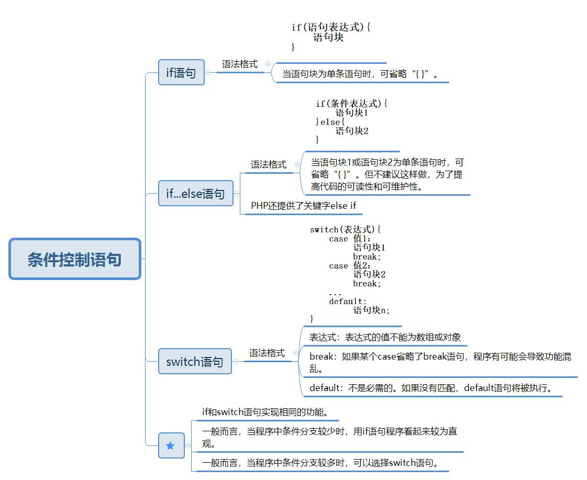

以下为学习孔祥盛主编的《PHP编程基础与实例教程》（第二版）所做的笔记。
PHP流程控制共有3种类型：条件控制结构、循环结构以及程序跳转和终止语句。
4.1 条件控制语句

4.1.1 if...else 语句
程序：
1 <?php
2 if(isset($_GET['userName'])){
3 $userName = $_GET['userName'];
4 }else{
5 $userName = "";
6 echo "请输入用户名<br/>";
7 }
8 if(isset($_GET['password'])){
9 $password = $_GET['password'];
10 }else{
11 $password = "";
12 echo "请输入密码<br/>";
13 }
14 if($userName=="admin"&&$password=="admin"){
15 echo "您输入的用户名和密码匹配";
16 }else{
17 if($userName!="admin"){
18 echo "用户名填写错误!<br/>";
19 }
20 if($password!="admin"){
21 echo "密码填写错误!<br/>";
22 }
23 }
24 ?>输出:
如果在浏览器地址栏中输入 http://localhost:88/practise/例程.php?userName=admin&password=admin
1 您输入的用户名和密码匹配如果在浏览器地址栏中输入 http://localhost:88/practise/例程.php?userName=123&password=123
1 用户名填写错误!
2 密码填写错误!如果在浏览器地址栏中输入 http://localhost:88/practise/例程.php
1 请输入用户名
2 请输入密码
3 用户名填写错误!
4 密码填写错误!
PHP还提供了关键字else if
程序：
1 <?php
2 if(isset($_GET['score'])){
3 $score = $_GET['score'];
4 }else{
5 $score = -1;
6 echo "请输入成绩！<br/>";
7 }
8 if($score>=90&&$score<=100){
9 echo "成绩优秀！";
10 }else if($score>=80&&$score<90){
11 echo "成绩良好！";
12 }else if($score>=60&&$score<80){
13 echo "成绩及格！";
14 }else if($score>=0){
15 echo "成绩不及格！";
16 }
17 ?>
输出：
如果在浏览器地址栏中输入 http://localhost:88/practise/例程.php
1 请输入成绩！如果在浏览器地址栏中输入 http://localhost:88/practise/例程.php?score=65
1 成绩及格！
4.1.2 switch 语句
程序：
功能是打印今天是星期几
1 <?php
2 switch(date("D")){
3 case "Mon":
4 echo "今天星期一<br/>";
5 break;
6 case "Tue":
7 echo "今天星期二<br/>";
8 break;
9 case "Wed":
10 echo "今天星期三<br/>";
11 break;
12 case "Thu":
13 echo "今天星期四<br/>";
14 break;
15 case "Fri":
16 echo "今天星期五<br/>";
17 break;
18 default:
19 echo "今天放假";
20 }
21 ?>输出：
1 今天星期三因为编程当天是星期三，所以运行结果如上。